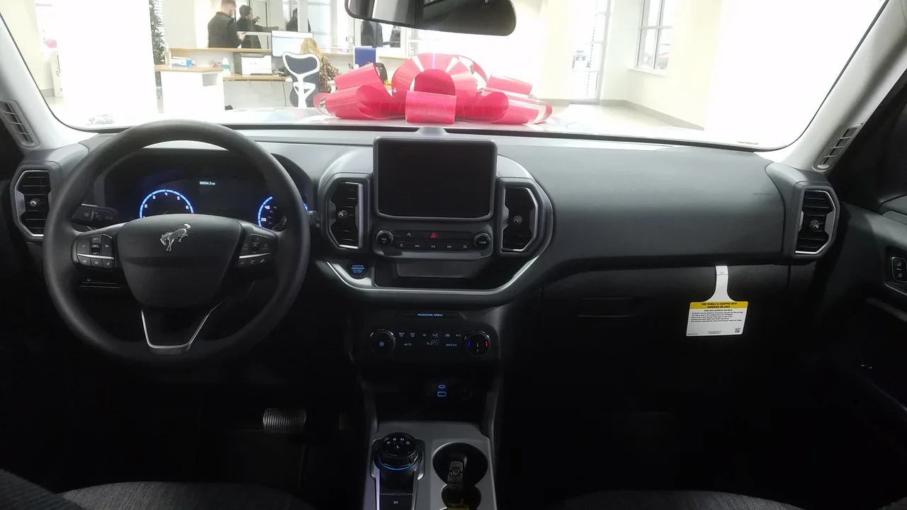

▲ 포드 브롱코 스포츠. 새 엔트리 SUV 역시 이처럼 각지고 다부진 디자인 언어를 이어받을 것으로 예상된다
포드가 2026년 8월 라스베이거스 딜러 미팅에서 4도어 머스탱 세단과 함께 또 하나의 신차 계획을 공개했습니다. 2029년 출시가 예상되는 2만5천 달러대 엔트리 SUV입니다. 오토모티브 뉴스에 정통한 관계자 3명에 따르면, 포드는 이 자리에서 초기 디자인 스케치가 담긴 영상을 딜러들에게 보여줬으며, 한 딜러는 이를 "초대 포드 에스코프를 닮았다"고 표현했습니다. 각지고 다부진 형태로, 기존의 매끈한 크로스오버 디자인과는 결이 다른 접근입니다.
1. 초대 에스코프 오마주 — 왜 다시 각진 디자인인가
딜러들이 공통적으로 지목한 키워드는 '박시(boxy)'였습니다. 1990년대 초대 포드 에스코프가 가진 직선적이고 실용적인 이미지를 현대적으로 재해석했다는 평가입니다. 최근 소형 SUV 시장에서 각진 디자인이 다시 인기를 끌고 있는 흐름과도 맞닿아 있습니다. 실용성과 견고함을 시각적으로 강조하는 이런 디자인은, 가격에 민감한 엔트리급 소비자에게 "믿음직한 첫 차"라는 인상을 주기 위한 전략으로 풀이됩니다.

▲ 포드 브롱코 스포츠 실내. 새 엔트리 SUV도 비슷한 실용적 인테리어 구성을 취할 가능성이 높다
2. 에스코프보다 저렴하게 — 사실상의 세대교체
이 신차는 시작가 2만5천 달러를 목표로 하는 것으로 알려졌습니다. 현재 포드 에스코프의 시작 가격보다 약 5천 달러 낮은 수준으로, 사실상 에스코프의 자리를 대신하는 후속 모델 성격이 짙습니다. 파워트레인은 가솔린과 하이브리드 옵션을 함께 제공할 예정이며, 순수전기 버전에 대한 언급은 아직 없습니다. 생산은 포드의 멕시코 에르모시요 조립공장에서 2029년부터 시작될 예정입니다.
| 항목 | 내용 |
|---|---|
| 예상 시작가 | $25,000 |
| 현행 에스코프 대비 | 약 $5,000 저렴 |
| 파워트레인 | 가솔린 + 하이브리드 |
| 생산 공장 | 멕시코 에르모시요 |
| 양산 시작 | 2029년 |
| 주요 경쟁 모델 | 쉐보레 트레일블레이저 |

▲ 쉐보레 트레일블레이저. 포드의 새 2만5천 달러대 SUV가 정조준하는 직접적인 경쟁 모델이다
3. 같은 날, 다른 두 신차 — 포드의 라인업 재편 신호
같은 딜러 미팅에서 4도어 머스탱 세단과 2만5천 달러대 엔트리 SUV가 동시에 공개됐다는 점은 의미심장합니다. 포드가 프리미엄 이미지의 머스탱 세단으로 상단을, 초저가 SUV로 하단을 각각 강화하며 라인업 양쪽 끝을 동시에 손보고 있다는 신호로 읽힙니다. 특히 저가 SUV 시장은 쉐보레 트레일블레이저, 현대 베뉴 등이 이미 자리 잡은 격전지인 만큼, 포드로서는 진입 장벽을 낮춰 신규 구매층을 끌어들이려는 의도로 보입니다.

▲ 같은 딜러 미팅에서 함께 공개된 4도어 머스탱 세단 프로토타입. 포드가 라인업의 상단과 하단을 동시에 재편하고 있음을 보여준다
4. 사라졌던 '보급형 포드', 부활 신호탄
포드는 그동안 엔트리 라인업을 축소하는 방향으로 움직여왔습니다. 47년간 이어져온 소형 해치백 피에스타는 2023년 7월 독일 쾰른 공장을 끝으로 유럽 생산이 종료됐고, 북미에서는 세단 라인업 대부분이 정리되면서 저가 구매층을 위한 선택지가 갈수록 좁아졌습니다. 이런 흐름 속에서 2만5천 달러대 신형 SUV는, 진입장벽을 낮춰 브랜드에 처음 발을 들이는 젊은 소비자층을 다시 끌어들이려는 시도로 해석됩니다. 머스탱 세단이 상단을 겨냥한다면, 이 차는 정반대편에서 포드 브랜드의 저변을 넓히는 역할을 맡게 되는 셈입니다.
5. 정리 — 2029년까지, 아직 갈 길은 멀다
아직 공식 발표가 아닌 딜러 대상 비공개 브리핑 단계인 만큼, 정확한 차명과 세부 스펙은 유동적입니다. 그러나 관계자 다수가 일관되게 증언한 내용인 데다, 같은 자리에서 나온 머스탱 세단 소식과 맞물려 신뢰도를 더하고 있습니다. 2029년 출시까지는 시간이 남아있지만, 포드가 저가 SUV 시장 공략을 재개했다는 신호 자체는 이미 뚜렷합니다. 후속 소식이 나오는 대로 계속 전해드리겠습니다.